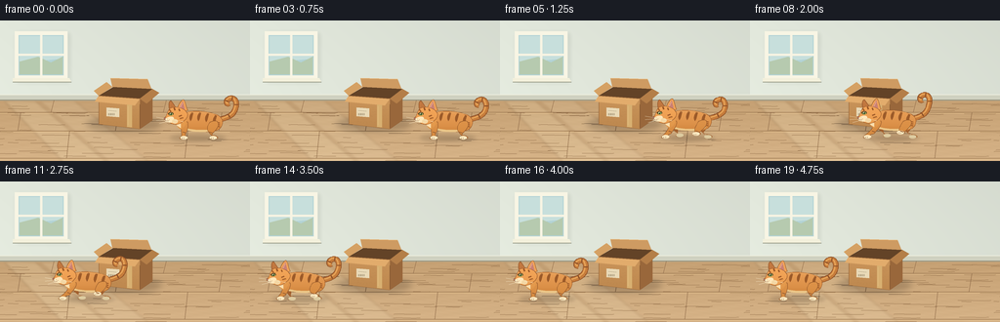
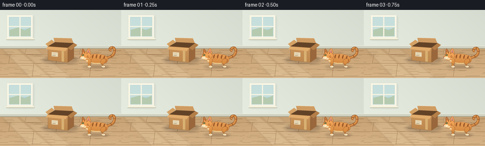

CODING AGENTS AS PIXEL WORLD MODELS
traex/GPT-6.1-Sol · dynamic_spatial_relationship_0007
点击播放 · 原生 RGB 像素
逐轮保存的候选
回放视频、检查图与代码变化。
每份候选均可单独播放。实际图片检查记录在下方工具轨迹中。
候选 01播放与检查图
点击播放 · 原生 RGB 像素


展开代码变化
--- 上一保存版本
+++ 本次保存版本
@@ -0,0 +1,232 @@
+from pathlib import Path
+import math
+import numpy as np
+from PIL import Image, ImageDraw, ImageFilter
+import artifact_io
+
+ROOT = Path(__file__).resolve().parent
+W,H,S = 256,144,4
+SZ=(W*S,H*S)
+rng=np.random.default_rng(19)
+
+def pt(p): return tuple(int(round(v*S)) for v in p)
+def box(b): return tuple(int(round(v*S)) for v in b)
+def path_points(start, segments):
+ out=[start]; p=np.array(start,dtype=float)
+ for a,b,c in segments:
+ a,b,c=map(lambda v:np.array(v,float),(a,b,c))
+ for t in np.linspace(0,1,20)[1:]:
+ q=(1-t)**3*p+3*(1-t)**2*t*a+3*(1-t)*t*t*b+t**3*c
+ out.append(tuple(q))
+ p=c
+ return out
+
+def poly(im, points, color):
+ ImageDraw.Draw(im).polygon([pt(p) for p in points],fill=color)
+def line(im, points, color, width=1):
+ d=ImageDraw.Draw(im); d.line([pt(p) for p in points], fill=color, width=max(1,round(width*S)),joint='curve')
+def ellipse(im,b,c): ImageDraw.Draw(im).ellipse(box(b),fill=c)
+def curve(im,start,segs,color,width): line(im,path_points(start,segs),color,width)
+
+def soft_shadow(im,b,alpha=55,blur=2.6):
+ sh=Image.new('RGBA',SZ); ellipse(sh,b,(66,48,33,alpha)); sh=sh.filter(ImageFilter.GaussianBlur(blur*S)); im.alpha_composite(sh)
+
+# Restrained, sunlit interior with a continuous wooden floor.
+yy,xx=np.mgrid[0:H*S,0:W*S]; x=xx/S; y=yy/S
+wall=np.zeros((H*S,W*S,3),float)
+light=1.0-0.055*(x/W)+0.018*np.sin(y/70)
+wall[:]=np.array([226,232,220])[None,None,:]*light[...,None]
+floor=y>=81
+wood=np.array([197,160,115])[None,None,:]+(y-81)[...,None]*np.array([.28,.31,.33])
+grain=(1.2*np.sin(x*.13+y*.9)+.65*np.sin(x*.34-y*1.8)+rng.normal(0,.3,x.shape))[...,None]
+wall=np.where(floor[...,None],wood+grain,wall)
+background=Image.fromarray(np.clip(wall,0,255).astype('uint8')).convert('RGBA')
+# Soft lighting and sun patches, no distracting props.
+sun=Image.new('RGBA',SZ)
+poly(sun,[(4,82),(36,82),(108,144),(64,144)],(255,244,206,39))
+poly(sun,[(40,82),(76,82),(151,144),(111,144)],(255,246,216,28))
+sun=sun.filter(ImageFilter.GaussianBlur(1.3*S)); background.alpha_composite(sun)
+# Baseboard against the wall.
+poly(background,[(0,76),(256,76),(256,82),(0,82)],(207,209,192,255))
+line(background,[(0,76),(256,76)],(241,240,224,255),.8)
+line(background,[(0,81.5),(256,81.5)],(132,125,102,160),.65)
+# Perspective floorboards, subtle seams and naturally irregular grain.
+for yf in (94,113,141):
+ line(background,[(0,yf),(256,yf)],(140,104,69,64),.45)
+ line(background,[(0,yf+.7),(256,yf+.7)],(231,196,144,80),.4)
+for x0,y0,y1 in [(55,82,94),(170,82,94),(21,94,113),(121,94,113),(227,94,113),(71,113,141),(192,113,141)]:
+ line(background,[(x0,y0),(x0-3,y1)],(143,107,73,55),.45)
+for k in range(75):
+ cy=rng.uniform(84,144); cx=rng.uniform(-20,256); length=rng.uniform(5,35)
+ curve(background,(cx,cy),[((cx+length*.35,cy-.5),(cx+length*.65,cy+.6),(cx+length,cy))],(126,90,55,11),.25)
+# Small, softly lit window establishes the interior at upper left.
+win=Image.new('RGBA',SZ)
+ImageDraw.Draw(win).rounded_rectangle(box((17,13,71,63)),radius=2*S,fill=(122,142,132,35))
+win=win.filter(ImageFilter.GaussianBlur(2*S)); background.alpha_composite(win)
+poly(background,[(15,11),(69,11),(69,61),(15,61)],(248,245,228,255))
+poly(background,[(19,15),(65,15),(65,56),(19,56)],(179,211,214,255))
+# Hazy daylight panes.
+poly(background,[(20,16),(64,16),(64,39),(20,43)],(199,223,220,255))
+poly(background,[(20,42),(39,37),(52,43),(64,37),(64,55),(20,55)],(182,202,175,255))
+line(background,[(42,15),(42,56)],(247,244,227,255),2.4)
+line(background,[(19,35),(65,35)],(247,244,227,255),2.2)
+poly(background,[(13,59),(71,59),(73,63),(13,63)],(243,240,219,255))
+line(background,[(13,63),(73,63)],(149,152,133,255),.7)
+
+# Cardboard box: real perspective, open top, folding flaps, subtle texture.
+soft_shadow(background,(89,99,165,113),64,3)
+poly(background,[(101,77),(143,80),(156,70),(116,68)],(99,67,39,255))
+poly(background,[(101,77),(143,80),(143,111),(101,106)],(186,132,77,255))
+poly(background,[(143,80),(156,70),(156,102),(143,111)],(153,103,59,255))
+# Front face mild lit gradient clipped to its polygon.
+mask=Image.new('L',SZ); poly(mask,[(101,77),(143,80),(143,111),(101,106)],255)
+a=np.zeros((H*S,W*S,4),dtype=np.uint8)
+fcol=np.stack([202-(y-78)*.39,149-(y-78)*.41,91-(y-78)*.4],axis=-1)
+a[:,:,:3]=np.clip(fcol,0,255); a[:,:,3]=np.asarray(mask)
+background.alpha_composite(Image.fromarray(a))
+# Raised back and side flaps make box immediately recognizable.
+poly(background,[(115,68),(155,70),(151,60),(113,59)],(206,155,98,255))
+line(background,[(113,59),(151,60)],(235,189,129,255),.7)
+poly(background,[(101,77),(115,68),(109,63),(96,72)],(213,161,100,255))
+poly(background,[(143,80),(156,70),(163,74),(150,85)],(180,126,72,255))
+poly(background,[(101,77),(143,80),(138,87),(97,83)],(226,172,108,255))
+line(background,[(101,77),(143,80)],(152,101,55,255),.65)
+line(background,[(143,86),(143,110)],(122,78,42,255),.6)
+line(background,[(101,84),(101,106),(143,111),(156,102)],(149,100,57,255),.55)
+# Faint paper fibers stay fixed across the sequence.
+paper=Image.new('RGBA',SZ)
+for _ in range(230):
+ xp=rng.uniform(103,141); yp=rng.uniform(88,105)
+ line(paper,[(xp,yp),(xp+rng.uniform(.2,1.4),yp+.05)],(109,74,42,20),.2)
+background.alpha_composite(paper)
+# A small blank shipping label (not text) and a piece of packing tape.
+poly(background,[(109,89),(122,90),(122,99),(109,98)],(233,218,183,255))
+line(background,[(111,92),(119,92.8)],(154,141,111,255),.45)
+for j in range(7):
+ line(background,[(111+j*.95,95),(111+j*.95,97)],(139,124,97,230),.3 if j%2 else .5)
+poly(background,[(130,86),(135,86.6),(135,109.5),(130,109)],(216,176,113,180))
+line(background,[(131,88),(131,107)],(235,199,140,120),.35)
+
+
+def draw_cat(canvas,cx,feet,phase,run,frame):
+ bob=run*(.4+1.3*math.sin(phase*2))
+ cy=feet-bob
+ cat=Image.new('RGBA',SZ)
+ def p(q): return (cx+q[0],cy+q[1])
+ def pp(qs): return [p(q) for q in qs]
+ def cp(st,segs): return path_points(p(st),[(p(a),p(b),p(c)) for a,b,c in segs])
+ def shape(st,segs,base,shade=0,outline=None):
+ points=cp(st,segs)
+ m=Image.new('L',SZ); poly(m,points,255)
+ # Smooth warm form shading with a quiet fine fur texture.
+ vals=np.zeros((H*S,W*S,4),np.uint8)
+ illum=(np.clip((cy-y-8)/27,0,1)*shade - np.clip((y-cy+14)/18,0,1)*shade*.65)
+ vals[:,:,:3]=np.clip(np.array(base)[None,None,:]+illum[...,None],0,255)
+ vals[:,:,3]=np.asarray(m)
+ cat.alpha_composite(Image.fromarray(vals))
+ if outline: line(cat,points+[points[0]],outline,.5)
+ def L(qs,c,w=1):line(cat,pp(qs),c,w)
+ def E(b,c):ellipse(cat,(cx+b[0],cy+b[1],cx+b[2],cy+b[3]),c)
+ # Expressive raised tail, follows behind the run, clearly attached to hip.
+ sway=1.4*math.sin(frame*.48) +run*2*math.sin(phase*.5)
+ tail=cp((20,-19),[((29,-21),(37,-23),(39,-31+sway)),((42,-40+sway),(36,-44+sway),(31,-40+sway)),((29,-38+sway),(30,-35+sway),(32,-36+sway))])
+ line(cat,tail,(140,78,38,255),5.7)
+ line(cat,tail,(198,124,59,255),4.5)
+ line(cat,[(a-.6,b-.65) for a,b in tail],(230,163,88,255),1.5)
+ for idx in (10,22,32,42):
+ if idx<len(tail)-1:
+ a=np.array(tail[idx]); tang=np.array(tail[min(idx+2,len(tail)-1)])-np.array(tail[max(idx-2,0)])
+ tang=tang/(np.linalg.norm(tang)+1e-6); norm=np.array([-tang[1],tang[0]])
+ line(cat,[tuple(a-norm*1.8),tuple(a+norm*1.8)],(143,82,41,255),1.3)
+ # Far legs behind the torso, then a sculpted torso and the near legs.
+ def leg(front,far):
+ offset=(math.pi if far else 0)+(0 if front else 1.25)
+ ph=phase+offset
+ swing=run*math.sin(ph)
+ lift=run*max(0,math.cos(ph))*5.3
+ ax=-13 if front else 17
+ ex=ax+(-1 if front else -4)+swing*4.5
+ px=ax+swing*(10.5 if front else 12)
+ py=-lift
+ if not front:
+ start=(ax+3,-18); other=(ax-4,-17)
+ segs=[((ax+7,-13),(ex+4,-7),(ex+2,-5)),((ex+1,-3),(px+2,py-4),(px+3,py-2)),((px+5,py-1),(px+3,py+.5),(px-2,py+.5)),((px-5,py+.5),(px-5,py-1),(px-2,py-3)),((ex-2,-7),(ax-9,-10),other),(other,(ax,-19),start)]
+ else:
+ start=(ax+3,-17); other=(ax-3,-18)
+ segs=[((ax+4,-12),(ex+3,-7),(ex+2,-5)),((ex+1,-3),(px+1,py-4),(px+2,py-2)),((px+4,py),(px+1,py+.8),(px-3,py+.5)),((px-6,py+.3),(px-5,py-1.5),(px-3,py-3)),((ex-2,-7),(ax-4,-11),other),(other,(ax+1,-18),start)]
+ color=(166,101,51) if far else (218,143,69)
+ shape(start,segs,color,9, (150,91,44,255) if not far else None)
+ # Pale socks and rounded individual toes.
+ E((px-4.6,py-2.8,px+2.9,py+.8),(221,203,160,255) if far else (250,232,192,255))
+ if not far:
+ for k in (0,1.8):L([(px-2.8+k,py-.9),(px-2.8+k,py+.2)],(166,139,100,255),.4)
+ L([(ex-1,-7),(ex+2,-6)],(151,90,44,220),1.1)
+ leg(True,True); leg(False,True)
+ shape((-19,-24),[((-11,-30),(8,-29),(19,-25)),((28,-22),(27,-12),(21,-9)),((15,-5),(-3,-8),(-10,-9)),((-17,-9),(-24,-17),(-19,-24))],(215,140,68),24,(156,91,42,255))
+ # Light underside of ribcage.
+ shape((-16,-13),[((-8,-8),(10,-8),(20,-11)),((17,-5),(-5,-7),(-12,-9)),((-15,-10),(-17,-12),(-16,-13))],(237,200,137),6)
+ # Tabby ribs, shoulder and haunch stripes taper to fine ends.
+ for q in [(-6,-27), (2,-27),(10,-26),(18,-24)]:
+ a,b=q
+ shape((a,b),[((a-2,b+3),(a-3,b+6),(a-1,b+9)),((a+.8,b+7),(a+1,b+3),(a+2,b+.6)),((a+1,b),(a,b),(a,b))],(153,88,39),5)
+ for j in range(3):
+ L([(19+j*.7,-17+j*2),(23,-16+j*2)],(167,96,42,255),1.2)
+ leg(False,False); leg(True,False)
+ # Shoulder and throat blend into the head rather than floating above it.
+ shape((-20,-29),[((-14,-30),(-10,-26),(-11,-18)),((-12,-12),(-17,-8),(-19,-11)),((-24,-16),(-25,-22),(-20,-29))],(223,149,72),17)
+ shape((-23,-21),[((-17,-20),(-17,-15),(-17,-11)),((-21,-13),(-25,-16),(-23,-21))],(250,222,173),5)
+ # Far pointed ear.
+ shape((-28,-29),[((-30,-34),(-29,-39),(-27,-39)),((-25,-36),(-23,-34),(-21,-29)),((-23,-27),(-26,-27),(-28,-29))],(181,107,51),13,(137,77,37,255))
+ # Near ear: tall triangle with softly shaded pink inner pinna.
+ shape((-21,-29),[((-20,-34),(-16,-41),(-14,-40)),((-12,-37),(-12,-33),(-10,-29)),((-14,-27),(-17,-27),(-21,-29))],(225,149,75),15,(149,87,41,255))
+ poly(cat,pp([(-18.7,-31),(-14.9,-38.4),(-13.1,-30)]),(202,128,115,255))
+ L([(-17.4,-32),(-15,-36.8)],(233,170,147,255),.7)
+ # Skull, forehead and left-facing muzzle.
+ shape((-28,-31),[((-23,-34),(-14,-32),(-11,-27)),((-8,-23),(-13,-18),(-17,-16)),((-21,-13),(-28,-15),(-30,-18)),((-34,-18),(-35,-20),(-33,-22)),((-31,-23),(-31,-28),(-28,-31))],(229,151,74),17,(152,90,44,255))
+ # Cheek and muzzle cream patches.
+ shape((-30,-22),[((-27,-23),(-24,-23),(-24,-20)),((-22,-17),(-27,-15.5),(-30,-17)),((-34,-17),(-35,-20),(-30,-22))],(254,230,185),3)
+ E((-26,-20,-20,-15.5),(244,215,164,255))
+ # Tabby face markings, one unmistakable feline eye.
+ L([(-29,-30),(-27,-27.8)],(155,88,37,255),1.5)
+ L([(-24,-31.7),(-23,-29)],(154,86,37,255),1.5)
+ L([(-19,-30.5),(-18,-28.3)],(151,85,38,255),1.3)
+ L([(-16,-24),(-19,-22.7)],(157,89,41,255),1.15)
+ L([(-14.4,-21.5),(-18,-20.5)],(164,96,43,255),1.15)
+ shape((-30,-25.3),[((-28.6,-27.6),(-25.8,-27.4),(-24.3,-25.4)),((-26,-23.4),(-28.8,-23.2),(-30,-25.3))],(95,78,42),0)
+ E((-28.5,-26.5,-25.5,-23.8),(155,184,98,255))
+ E((-27.5,-26.5,-26.5,-23.9),(34,40,27,255))
+ E((-28.0,-26.2,-27.2,-25.4),(255,251,224,255))
+ L([(-30,-25.5),(-28,-27),(-25,-26.8)],(98,65,34,255),.65)
+ # Small rose nose, mouth, freckles and fine swept whiskers.
+ poly(cat,pp([(-34.8,-21.1),(-32.2,-21.5),(-33.3,-19.6)]),(142,81,72,255))
+ L([(-33.3,-19.7),(-32.6,-18.4),(-29.8,-18.2)],(118,77,55,255),.45)
+ for q in [(-30.5,-19.9),(-28.8,-19.2),(-30,-18.5)]:E((q[0]-.25,q[1]-.25,q[0]+.25,q[1]+.25),(159,121,82,255))
+ for st,end in [((-30,-19.5),(-42,-22)),((-30,-18.7),(-42,-18.5)),((-28,-18),(-39,-15.4)),((-23,-18.8),(-15,-17.4))]:
+ L([st,((st[0]+end[0])/2,(st[1]+end[1])/2-.3),end],(254,243,214,230),.36)
+ # Fine fur accents on back and cheeks, static local coordinates.
+ for k in range(20):
+ u=-10+k*1.35; v=-26.2+2*max(0,(u-9)/15)
+ L([(u,v),(u+1.2,v-.4)],(246,187,110,125),.3)
+ for q in [(-16,-18),(-15.5,-17),(-18,-15)]:L([q,(q[0]+1.3,q[1]-.6)],(255,218,166,180),.35)
+ canvas.alpha_composite(cat)
+
+
+def main():
+ frames=[]
+ for i in range(20):
+ image=background.copy()
+ u=np.clip((i-3)/12,0,1)
+ sm=u*u*(3-2*u)
+ cx=202-154*sm
+ # Start and finish at rest; a short, legible gallop across the box's foreground.
+ run=math.sin(math.pi*u)**.42 if 0<u<1 else 0.0
+ phase=(i-3)*2.15
+ soft_shadow(image,(cx-28,116.8,cx+29,124),int(48-run*7),2)
+ soft_shadow(image,(cx-16,119,cx+21,122.5),24,1.3)
+ draw_cat(image,cx,121,phase,run,i)
+ frames.append(np.asarray(image.convert('RGB').resize((W,H),Image.Resampling.LANCZOS)))
+ frames=np.stack(frames).astype(np.uint8)
+ artifact_io.save(frames,ROOT)
+ print('Saved',frames.shape,'RGB frames to',ROOT)
+
+if __name__=='__main__':main()
可观测工具轨迹
实际执行的命令与返回图片。
命令 1exit 0
/bin/bash -lc "ls -la && cat prompt.txt && printf '\\n---RULES---\\n' && cat GENERATION_RULES.md && printf '\\n---SPEC---\\n' && cat task_spec.json"
命令 2exit 0
/bin/bash -lc "cat artifact_io.py && printf '\\n---ENV---\\n' && python - <<'PY' import PIL, numpy print(PIL.__version__) PY"
命令 3exit 0
/bin/bash -lc "cat > generate.py <<'PY'
from pathlib import Path
import math
import numpy as np
from PIL import Image, ImageDraw, ImageFilter
import artifact_io
ROOT = Path(__file__).resolve().parent
W,H,S = 256,144,4
SZ=(W*S,H*S)
rng=np.random.default_rng(19)
def pt(p): return tuple(int(round(v*S)) for v in p)
def box(b): return tuple(int(round(v*S)) for v in b)
def path_points(start, segments):
out=[start]; p=np.array(start,dtype=float)
for a,b,c in segments:
a,b,c=map(lambda v:np.array(v,float),(a,b,c))
for t in np.linspace(0,1,20)[1:]:
q=(1-t)**3*p+3*(1-t)**2*t*a+3*(1-t)*t*t*b+t**3*c
out.append(tuple(q))
p=c
return out
def poly(im, points, color):
ImageDraw.Draw(im).polygon([pt(p) for p in points],fill=color)
def line(im, points, color, width=1):
d=ImageDraw.Draw(im); d.line([pt(p) for p in points], fill=color, width=max(1,round(width*S)),joint='curve')
def ellipse(im,b,c): ImageDraw.Draw(im).ellipse(box(b),fill=c)
def curve(im,start,segs,color,width): line(im,path_points(start,segs),color,width)
def soft_shadow(im,b,alpha=55,blur=2.6):
sh=Image.new('RGBA',SZ); ellipse(sh,b,(66,48,33,alpha)); sh=sh.filter(ImageFilter.GaussianBlur(blur*S)); im.alpha_composite(sh)
# Restrained, sunlit interior with a continuous wooden floor.
yy,xx=np.mgrid[0:H*S,0:W*S]; x=xx/S; y=yy/S
wall=np.zeros((H*S,W*S,3),float)
light=1.0-0.055*(x/W)+0.018*np.sin(y/70)
wall[:]=np.array([226,232,220])[None,None,:]*light[...,None]
floor=y>=81
wood=np.array([197,160,115])[None,None,:]+(y-81)[...,None]*np.array([.28,.31,.33])
grain=(1.2*np.sin(x*.13+y*.9)+.65*np.sin(x*.34-y*1.8)+rng.normal(0,.3,x.shape))[...,None]
wall=np.where(floor[...,None],wood+grain,wall)
background=Image.fromarray(np.clip(wall,0,255).astype('uint8')).convert('RGBA')
# Soft lighting and sun patches, no distracting props.
sun=Image.new('RGBA',SZ)
poly(sun,[(4,82),(36,82),(108,144),(64,144)],(255,244,206,39))
poly(sun,[(40,82),(76,82),(151,144),(111,144)],(255,246,216,28))
sun=sun.filter(ImageFilter.GaussianBlur(1.3*S)); background.alpha_composite(sun)
# Baseboard against the wall.
poly(background,[(0,76),(256,76),(256,82),(0,82)],(207,209,192,255))
line(background,[(0,76),(256,76)],(241,240,224,255),.8)
line(background,[(0,81.5),(256,81.5)],(132,125,102,160),.65)
# Perspective floorboards, subtle seams and naturally irregular grain.
for yf in (94,113,141):
line(background,[(0,yf),(256,yf)],(140,104,69,64),.45)
line(background,[(0,yf+.7),(256,yf+.7)],(231,196,144,80),.4)
for x0,y0,y1 in [(55,82,94),(170,82,94),(21,94,113),(121,94,113),(227,94,113),(71,113,141),(192,113,141)]:
line(background,[(x0,y0),(x0-3,y1)],(143,107,73,55),.45)
for k in range(75):
cy=rng.uniform(84,144); cx=rng.uniform(-20,256); length=rng.uniform(5,35)
curve(background,(cx,cy),[((cx+length*.35,cy-.5),(cx+length*.65,cy+.6),(cx+length,cy))],(126,90,55,11),.25)
# Small, softly lit window establishes the interior at upper left.
win=Image.new('RGBA',SZ)
ImageDraw.Draw(win).rounded_rectangle(box((17,13,71,63)),radius=2*S,fill=(122,142,132,35))
win=win.filter(ImageFilter.GaussianBlur(2*S)); background.alpha_composite(win)
poly(background,[(15,11),(69,11),(69,61),(15,61)],(248,245,228,255))
poly(background,[(19,15),(65,15),(65,56),(19,56)],(179,211,214,255))
# Hazy daylight panes.
poly(background,[(20,16),(64,16),(64,39),(20,43)],(199,223,220,255))
poly(background,[(20,42),(39,37),(52,43),(64,37),(64,55),(20,55)],(182,202,175,255))
line(background,[(42,15),(42,56)],(247,244,227,255),2.4)
line(background,[(19,35),(65,35)],(247,244,227,255),2.2)
poly(background,[(13,59),(71,59),(73,63),(13,63)],(243,240,219,255))
line(background,[(13,63),(73,63)],(149,152,133,255),.7)
# Cardboard box: real perspective, open top, folding flaps, subtle texture.
soft_shadow(background,(89,99,165,113),64,3)
poly(background,[(101,77),(143,80),(156,70),(116,68)],(99,67,39,255))
poly(background,[(101,77),(143,80),(143,111),(101,106)],(186,132,77,255))
poly(background,[(143,80),(156,70),(156,102),(143,111)],(153,103,59,255))
# Front face mild lit gradient clipped to its polygon.
mask=Image.new('L',SZ); poly(mask,[(101,77),(143,80),(143,111),(101,106)],255)
a=np.zeros((H*S,W*S,4),dtype=np.uint8)
fcol=np.stack([202-(y-78)*.39,149-(y-78)*.41,91-(y-78)*.4],axis=-1)
a[:,:,:3]=np.clip(fcol,0,255); a[:,:,3]=np.asarray(mask)
background.alpha_composite(Image.fromarray(a))
# Raised back and side flaps make box immediately recognizable.
poly(background,[(115,68),(155,70),(151,60),(113,59)],(206,155,98,255))
line(background,[(113,59),(151,60)],(235,189,129,255),.7)
poly(background,[(101,77),(115,68),(109,63),(96,72)],(213,161,100,255))
poly(background,[(143,80),(156,70),(163,74),(150,85)],(180,126,72,255))
poly(background,[(101,77),(143,80),(138,87),(97,83)],(226,172,108,255))
line(background,[(101,77),(143,80)],(152,101,55,255),.65)
line(background,[(143,86),(143,110)],(122,78,42,255),.6)
line(background,[(101,84),(101,106),(143,111),(156,102)],(149,100,57,255),.55)
# Faint paper fibers stay fixed across the sequence.
paper=Image.new('RGBA',SZ)
for _ in range(230):
xp=rng.uniform(103,141); yp=rng.uniform(88,105)
line(paper,[(xp,yp),(xp+rng.uniform(.2,1.4),yp+.05)],(109,74,42,20),.2)
background.alpha_composite(paper)
# A small blank shipping label (not text) and a piece of packing tape.
poly(background,[(109,89),(122,90),(122,99),(109,98)],(233,218,183,255))
line(background,[(111,92),(119,92.8)],(154,141,111,255),.45)
for j in range(7):
line(background,[(111+j*.95,95),(111+j*.95,97)],(139,124,97,230),.3 if j%2 else .5)
poly(background,[(130,86),(135,86.6),(135,109.5),(130,109)],(216,176,113,180))
line(background,[(131,88),(131,107)],(235,199,140,120),.35)
def draw_cat(canvas,cx,feet,phase,run,frame):
bob=run*(.4+1.3*math.sin(phase*2))
cy=feet-bob
cat=Image.new('RGBA',SZ)
def p(q): return (cx+q[0],cy+q[1])
def pp(qs): return [p(q) for q in qs]
def cp(st,segs): return path_points(p(st),[(p(a),p(b),p(c)) for a,b,c in segs])
def shape(st,segs,base,shade=0,outline=None):
points=cp(st,segs)
m=Image.new('L',SZ); poly(m,points,255)
# Smooth warm form shading with a quiet fine fur texture.
vals=np.zeros((H*S,W*S,4),np.uint8)
illum=(np.clip((cy-y-8)/27,0,1)*shade - np.clip((y-cy+14)/18,0,1)*shade*.65)
vals[:,:,:3]=np.clip(np.array(base)[None,None,:]+illum[...,None],0,255)
vals[:,:,3]=np.asarray(m)
cat.alpha_composite(Image.fromarray(vals))
if outline: line(cat,points+[points[0]],outline,.5)
def L(qs,c,w=1):line(cat,pp(qs),c,w)
def E(b,c):ellipse(cat,(cx+b[0],cy+b[1],cx+b[2],cy+b[3]),c)
# Expressive raised tail, follows behind the run, clearly attached to hip.
sway=1.4*math.sin(frame*.48) +run*2*math.sin(phase*.5)
tail=cp((20,-19),[((29,-21),(37,-23),(39,-31+sway)),((42,-40+sway),(36,-44+sway),(31,-40+sway)),((29,-38+sway),(30,-35+sway),(32,-36+sway))])
line(cat,tail,(140,78,38,255),5.7)
line(cat,tail,(198,124,59,255),4.5)
line(cat,[(a-.6,b-.65) for a,b in tail],(230,163,88,255),1.5)
for idx in (10,22,32,42):
if idx<len(tail)-1:
a=np.array(tail[idx]); tang=np.array(tail[min(idx+2,len(tail)-1)])-np.array(tail[max(idx-2,0)])
tang=tang/(np.linalg.norm(tang)+1e-6); norm=np.array([-tang[1],tang[0]])
line(cat,[tuple(a-norm*1.8),tuple(a+norm*1.8)],(143,82,41,255),1.3)
# Far legs behind the torso, then a sculpted torso and the near legs.
def leg(front,far):
offset=(math.pi if far else 0)+(0 if front else 1.25)
ph=phase+offset
swing=run*math.sin(ph)
lift=run*max(0,math.cos(ph))*5.3
ax=-13 if front else 17
ex=ax+(-1 if front else -4)+swing*4.5
px=ax+swing*(10.5 if front else 12)
py=-lift
if not front:
start=(ax+3,-18); other=(ax-4,-17)
segs=[((ax+7,-13),(ex+4,-7),(ex+2,-5)),((ex+1,-3),(px+2,py-4),(px+3,py-2)),((px+5,py-1),(px+3,py+.5),(px-2,py+.5)),((px-5,py+.5),(px-5,py-1),(px-2,py-3)),((ex-2,-7),(ax-9,-10),other),(other,(ax,-19),start)]
else:
start=(ax+3,-17); other=(ax-3,-18)
segs=[((ax+4,-12),(ex+3,-7),(ex+2,-5)),((ex+1,-3),(px+1,py-4),(px+2,py-2)),((px+4,py),(px+1,py+.8),(px-3,py+.5)),((px-6,py+.3),(px-5,py-1.5),(px-3,py-3)),((ex-2,-7),(ax-4,-11),other),(other,(ax+1,-18),start)]
color=(166,101,51) if far else (218,143,69)
shape(start,segs,color,9, (150,91,44,255) if not far else None)
# Pale socks and rounded individual toes.
E((px-4.6,py-2.8,px+2.9,py+.8),(221,203,160,255) if far else (250,232,192,255))
if not far:
for k in (0,1.8):L([(px-2.8+k,py-.9),(px-2.8+k,py+.2)],(166,139,100,255),.4)
L([(ex-1,-7),(ex+2,-6)],(151,90,44,220),1.1)
leg(True,True); leg(False,True)
shape((-19,-24),[((-11,-30),(8,-29),(19,-25)),((28,-22),(27,-12),(21,-9)),((15,-5),(-3,-8),(-10,-9)),((-17,-9),(-24,-17),(-19,-24))],(215,140,68),24,(156,91,42,255))
# Light underside of ribcage.
shape((-16,-13),[((-8,-8),(10,-8),(20,-11)),((17,-5),(-5,-7),(-12,-9)),((-15,-10),(-17,-12),(-16,-13))],(237,200,137),6)
# Tabby ribs, shoulder and haunch stripes taper to fine ends.
for q in [(-6,-27), (2,-27),(10,-26),(18,-24)]:
a,b=q
shape((a,b),[((a-2,b+3),(a-3,b+6),(a-1,b+9)),((a+.8,b+7),(a+1,b+3),(a+2,b+.6)),((a+1,b),(a,b),(a,b))],(153,88,39),5)
for j in range(3):
L([(19+j*.7,-17+j*2),(23,-16+j*2)],(167,96,42,255),1.2)
leg(False,False); leg(True,False)
# Shoulder and throat blend into the head rather than floating above it.
shape((-20,-29),[((-14,-30),(-10,-26),(-11,-18)),((-12,-12),(-17,-8),(-19,-11)),((-24,-16),(-25,-22),(-20,-29))],(223,149,72),17)
shape((-23,-21),[((-17,-20),(-17,-15),(-17,-11)),((-21,-13),(-25,-16),(-23,-21))],(250,222,173),5)
# Far pointed ear.
shape((-28,-29),[((-30,-34),(-29,-39),(-27,-39)),((-25,-36),(-23,-34),(-21,-29)),((-23,-27),(-26,-27),(-28,-29))],(181,107,51),13,(137,77,37,255))
# Near ear: tall triangle with softly shaded pink inner pinna.
shape((-21,-29),[((-20,-34),(-16,-41),(-14,-40)),((-12,-37),(-12,-33),(-10,-29)),((-14,-27),(-17,-27),(-21,-29))],(225,149,75),15,(149,87,41,255))
poly(cat,pp([(-18.7,-31),(-14.9,-38.4),(-13.1,-30)]),(202,128,115,255))
L([(-17.4,-32),(-15,-36.8)],(233,170,147,255),.7)
# Skull, forehead and left-facing muzzle.
shape((-28,-31),[((-23,-34),(-14,-32),(-11,-27)),((-8,-23),(-13,-18),(-17,-16)),((-21,-13),(-28,-15),(-30,-18)),((-34,-18),(-35,-20),(-33,-22)),((-31,-23),(-31,-28),(-28,-31))],(229,151,74),17,(152,90,44,255))
# Cheek and muzzle cream patches.
shape((-30,-22),[((-27,-23),(-24,-23),(-24,-20)),((-22,-17),(-27,-15.5),(-30,-17)),((-34,-17),(-35,-20),(-30,-22))],(254,230,185),3)
E((-26,-20,-20,-15.5),(244,215,164,255))
# Tabby face markings, one unmistakable feline eye.
L([(-29,-30),(-27,-27.8)],(155,88,37,255),1.5)
L([(-24,-31.7),(-23,-29)],(154,86,37,255),1.5)
L([(-19,-30.5),(-18,-28.3)],(151,85,38,255),1.3)
L([(-16,-24),(-19,-22.7)],(157,89,41,255),1.15)
L([(-14.4,-21.5),(-18,-20.5)],(164,96,43,255),1.15)
shape((-30,-25.3),[((-28.6,-27.6),(-25.8,-27.4),(-24.3,-25.4)),((-26,-23.4),(-28.8,-23.2),(-30,-25.3))],(95,78,42),0)
E((-28.5,-26.5,-25.5,-23.8),(155,184,98,255))
E((-27.5,-26.5,-26.5,-23.9),(34,40,27,255))
E((-28.0,-26.2,-27.2,-25.4),(255,251,224,255))
L([(-30,-25.5),(-28,-27),(-25,-26.8)],(98,65,34,255),.65)
# Small rose nose, mouth, freckles and fine swept whiskers.
poly(cat,pp([(-34.8,-21.1),(-32.2,-21.5),(-33.3,-19.6)]),(142,81,72,255))
L([(-33.3,-19.7),(-32.6,-18.4),(-29.8,-18.2)],(118,77,55,255),.45)
for q in [(-30.5,-19.9),(-28.8,-19.2),(-30,-18.5)]:E((q[0]-.25,q[1]-.25,q[0]+.25,q[1]+.25),(159,121,82,255))
for st,end in [((-30,-19.5),(-42,-22)),((-30,-18.7),(-42,-18.5)),((-28,-18),(-39,-15.4)),((-23,-18.8),(-15,-17.4))]:
L([st,((st[0]+end[0])/2,(st[1]+end[1])/2-.3),end],(254,243,214,230),.36)
# Fine fur accents on back and cheeks, static local coordinates.
for k in range(20):
u=-10+k*1.35; v=-26.2+2*max(0,(u-9)/15)
L([(u,v),(u+1.2,v-.4)],(246,187,110,125),.3)
for q in [(-16,-18),(-15.5,-17),(-18,-15)]:L([q,(q[0]+1.3,q[1]-.6)],(255,218,166,180),.35)
canvas.alpha_composite(cat)
def main():
frames=[]
for i in range(20):
image=background.copy()
u=np.clip((i-3)/12,0,1)
sm=u*u*(3-2*u)
cx=202-154*sm
# Start and finish at rest; a short, legible gallop across the box's foreground.
run=math.sin(math.pi*u)**.42 if 0<u<1 else 0.0
phase=(i-3)*2.15
soft_shadow(image,(cx-28,116.8,cx+29,124),int(48-run*7),2)
soft_shadow(image,(cx-16,119,cx+21,122.5),24,1.3)
draw_cat(image,cx,121,phase,run,i)
frames.append(np.asarray(image.convert('RGB').resize((W,H),Image.Resampling.LANCZOS)))
frames=np.stack(frames).astype(np.uint8)
artifact_io.save(frames,ROOT)
print('Saved',frames.shape,'RGB frames to',ROOT)
if __name__=='__main__':main()
PY
python generate.py"命令 4exit 2
/bin/bash -lc "python - <<'PY'
from pathlib import Path
import numpy as np
from PIL import Image
p=Path('.')
a=np.load(p/'pixels.npz')['pixels']
assert a.shape == (144,256,20)
for n in range(20):
im=Image.open(p/'frames'/f'{n:02d}.png')
assert im.size == (256,144) and im.mode == 'RGB'
assert (p/'index.html').is_file()
print('Verified all 20 RGB frames and playback artifacts.')
PY
if command -v ffmpeg >/dev/null; then ffmpeg -y -loglevel error -framerate 4 -i frames/%02d.png -c:v libx264 -crf 17 -pix_fmt yuv420p -movflags +faststart video.mp4; fi
ls -lh pixels.npz index.html video.mp4 generate.py"保存候选 1 份；完成命令 4 次；可验证图片返回 0 张。原始 API 响应与完整日志保留在本地。